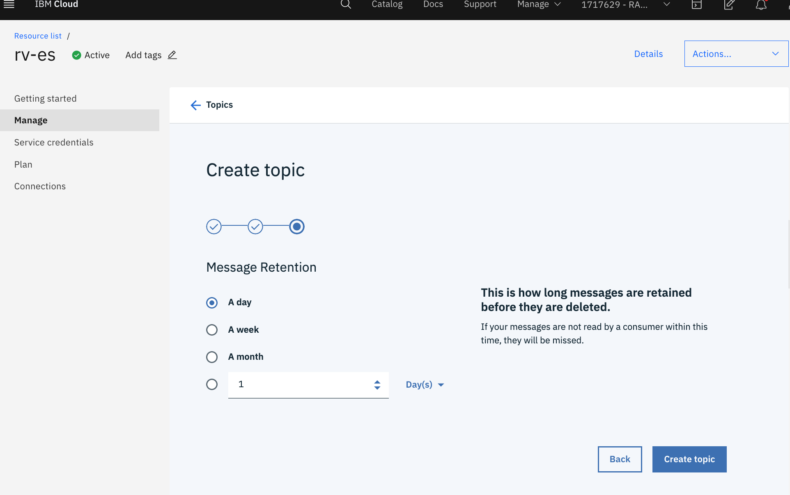
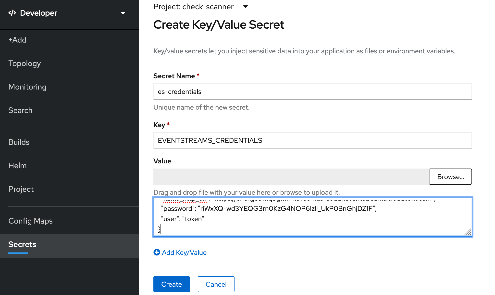

Create an IBM Cloud Event Streams service
IBM Cloud Event Streams is a fast, scalable, fully managed messaging service, based on Apache Kafka, an open-source, high-throughput messaging system which provides a low-latency platform for handling real-time data feeds.
- In your
IBM Cloudtab, click on Catalog, create a Event Streams service.- Plan: Standard
- Service name:
<your-initials>-es. For example:rv-es - Select a resource group and click Create
- Under Manage, switch to Topics tab.
- Click on Create topic and provide
work-topicas the Topic name. Click Next - Select 1 partition, click Next and choose A day of Message retention.
- Click Create topic 
- Click on Create topic and provide
- Create the service credentials
- Service Credentials -> New credential -> Add
- Expand Service credentials-1 and then click on the Copy icon.

You've now created a Event Streams instance and have the credentials copied to your clipboard. Let's give these credentials to your application.
The Secret object type provides a mechanism to hold sensitive information such as passwords and keys. These secrets can then be added to your application.
- In your OpenShift dashboard tab, click on Secrets
- Create -> Key/Value Secret
- Secret Name :
es-credentials - Key :
EVENTSTREAMS_CREDENTIALS - Value : Press Cmd+V(mac)/Ctrl-V(Windows) to paste from your clipboard. 
- Create
- Add Secret to Workload -> Select a workload -> check-scanner-processor -> Save
- Secret Name :
Bind the secret to the Check Upload app as well:
- Click on Secrets
- Click on es-credentials
- Add Secret to Workload -> Select a workload -> check-scanner-upload -> Save
Both of your applications will restart with the new sets of credentials (new pods will spin up and the old pods will be terminated). You can watch the status in Topology.
Visit your Check Upload application and upload the sample image again. This time, you will see that the check getting processed in a few seconds. Check Upload app uploaded the check image to object storage and sent a message to Event Streams. Check Processor app consumed this message, retrieved the image from Object Storage and processed the image.
Congrats! You've deployed both applications and configured them with the Event Stream and Object Storage services!